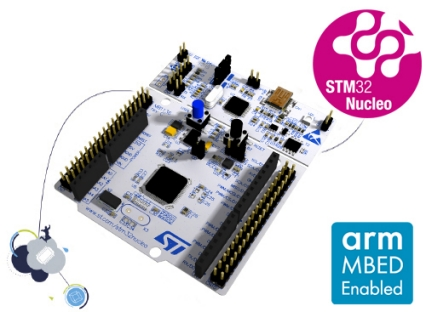
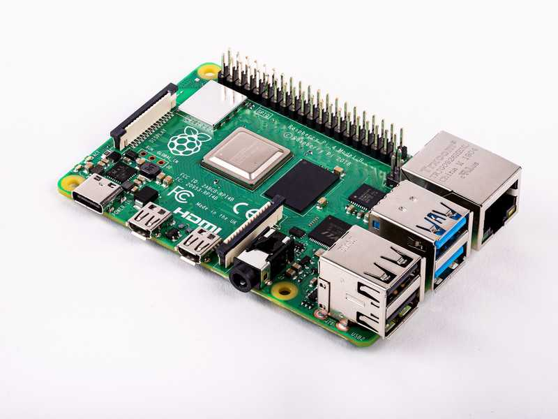
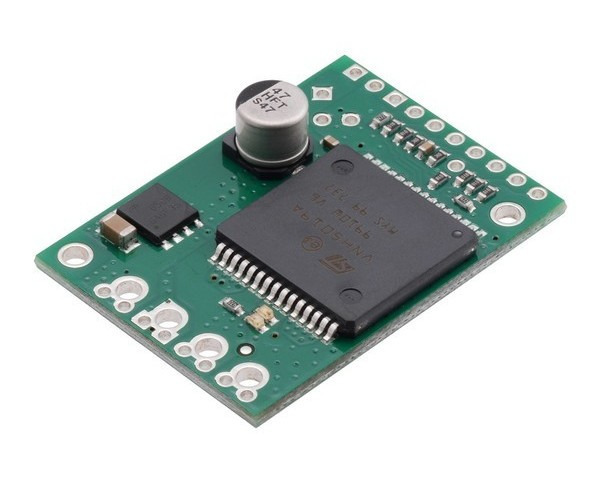
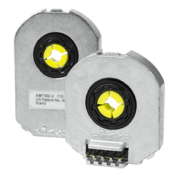
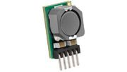
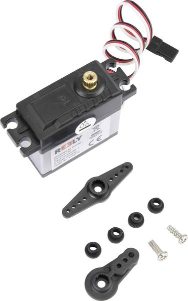
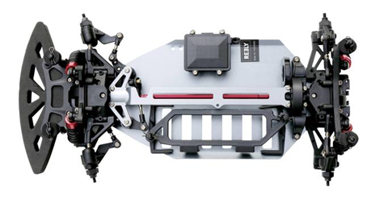
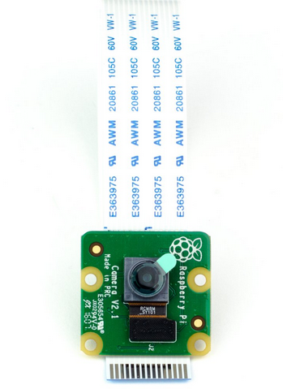
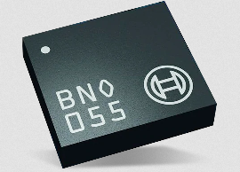

Components list
NucleoF401RE
{kind=link}
- It’s a micro-controller low level control. Here are some links:
Raspberry Pi 4 Mobel b
{kind=link}
- It’s a single board computer for high level control and features. The given version has 4GB/2GB RAM memory. Here are some links:
VNH5012 H-bridge Motor Driver
{kind=link}
- It’s H-bridge for dc motor. In some of the cars, the driver model is is Pololu G2 High-Power Motor Driver. Here are the links:
AMT103 Encoder
{kind=link}
- It’s a high accuracy incremental encoder. Here are some links:
DC/DC Converters
{kind=link}
- It’s a OKR-T/10-W12-C non-Isolated dc/dc converter to generate a 5V for supplying the components. Here are some links:
Servo motor
{kind=link}
- It’s a Reely RS610WP Servo Motor. Links:
Battery
Two types of batteries were give: Topfuel Lipo battery 20C-ECO-X with capacity 5000MAH and two cells or 7.4 V 5500 mAh No. of cells: 2 20 C Softcase XT90. or Conrad energy Scale model battery pack (LiPo) 7.4 V 5500 mAh No. of cells: 2 20 C Softcase XT90
Here you can see some info: Battery info
Chassis
{kind=link}
It’s a Reely TC-04 Onroad-Chassis 1:10, RC model car Electric Road version 4WD ARR. Here is the user manual: Reely TC-04 Onroad-Chassis 1:10
Camera
{kind=link}
It’s a PiCamera v2.1. Here is a useful link PiCamera v2.1
Smart IMU
{kind=link}
- It’s a smart IMU sensor, BNO055 or an MPU6050- . Here are some links: